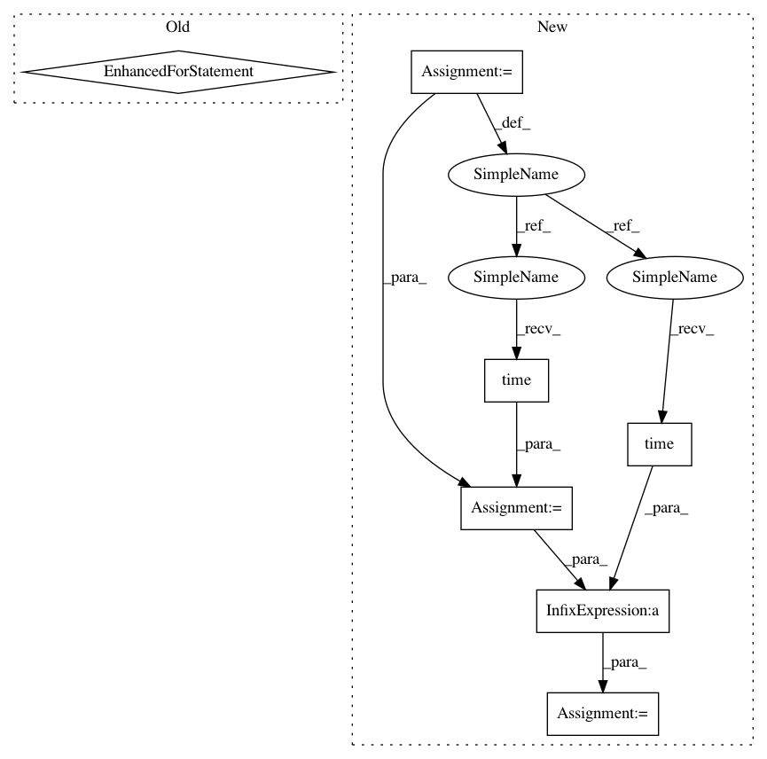

1acd2c4d48013ea1623ddbf9f28166a85404213a,models/experimental/inception/inception_v3.py,,main,#Any#,678
Before Change
timeout=FLAGS.eval_timeout,
timeout_fn=terminate_eval)
for checkpoint in get_next_checkpoint():
tf.logging.info("Starting to evaluate.")
try:
eval_results = inception_classifier.evaluate(
input_fn=imagenet_eval.input_fn,
steps=eval_steps,
hooks=eval_hooks,
checkpoint_path=checkpoint)
tf.logging.info("Evaluation results: %s" % eval_results)
except tf.errors.NotFoundError:
// skip checkpoint if it gets deleted prior to evaluation
tf.logging.info("Checkpoint %s no longer exists ... skipping")
elif FLAGS.mode == "train_and_eval":
for cycle in range(FLAGS.train_steps // FLAGS.train_steps_per_eval):
tf.logging.info("Starting training cycle %d." % cycle)
inception_classifier.train(
After Change
for checkpoint in evaluation.checkpoints_iterator(FLAGS.model_dir):
tf.logging.info("Starting to evaluate.")
try:
start_timestamp = time.time() // Includes compilation time
eval_results = inception_classifier.evaluate(
input_fn=imagenet_eval.input_fn,
steps=eval_steps,
hooks=eval_hooks,
checkpoint_path=checkpoint)
elapsed_time = int(time.time() - start_timestamp)
tf.logging.info(
"Eval results: %s. Elapsed seconds: %d", eval_results, elapsed_time)
// Terminate eval job when final checkpoint is reached
In pattern: SUPERPATTERN
Frequency: 3
Non-data size: 7
Instances
Project Name: tensorflow/tpu
Commit Name: 1acd2c4d48013ea1623ddbf9f28166a85404213a
Time: 2018-04-16
Author: bignamehyp@users.noreply.github.com
File Name: models/experimental/inception/inception_v3.py
Class Name:
Method Name: main
Project Name: dmlc/gluon-cv
Commit Name: 960a107ad419d2690e352972950e76495deb1ad6
Time: 2019-03-18
Author: xinyu1.chen@intel.com
File Name: scripts/detection/ssd/eval_ssd.py
Class Name:
Method Name: validate
Project Name: tensorflow/tpu
Commit Name: 1acd2c4d48013ea1623ddbf9f28166a85404213a
Time: 2018-04-16
Author: bignamehyp@users.noreply.github.com
File Name: models/experimental/inception/inception_v2.py
Class Name:
Method Name: main